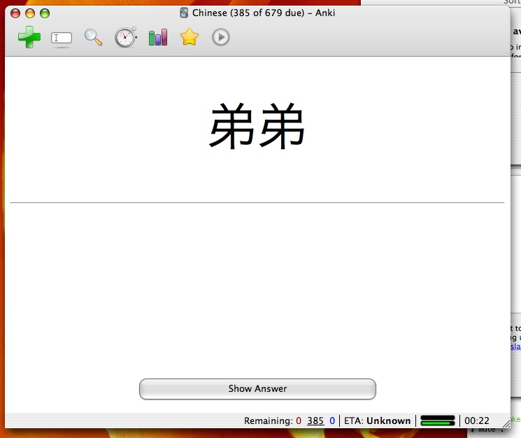
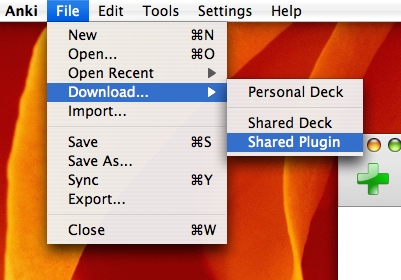
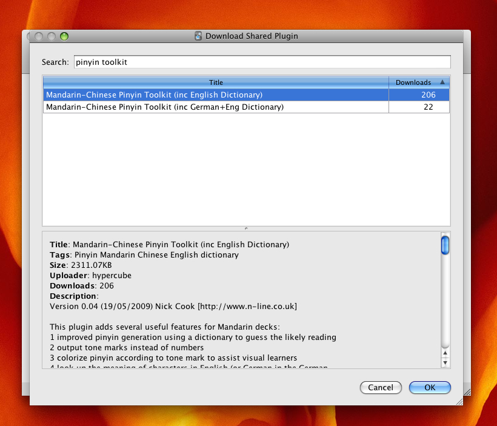
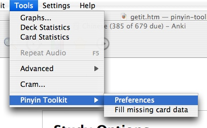
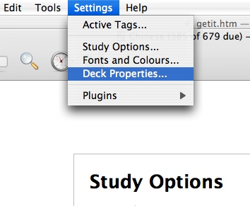
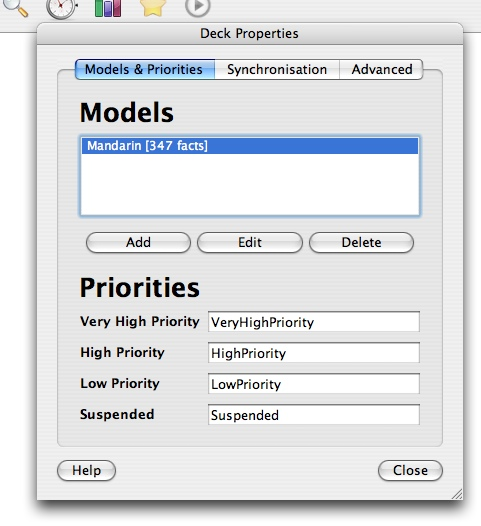
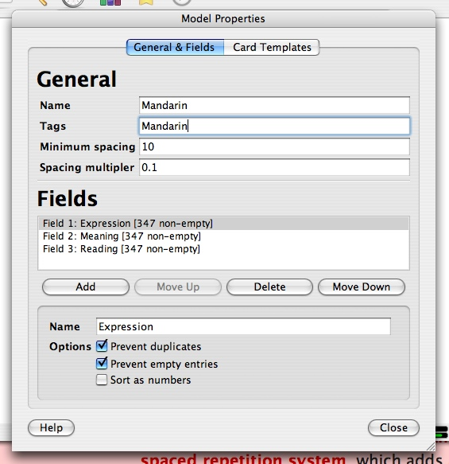

Installation
-

If you haven't already, download and install Anki. The Pinyin Toolkit is a plugin built on top of Anki. Anki provides the powerful spaced repetition system for aiding memorisation, and the Pinyin Toolkit enhances it with plenty of Chinese-specific goodness.
Anki (and Pinyin Toolkit) is available on all the major platforms: Windows, OS X and Linux.
-

Open Anki, then choose "File" > "Download" > "Shared Plugin".
-

From the resulting list, search for "Pinyin Toolkit" and choose "Install" to download and install the plugin.
-

Restart Anki. The Pinyin Toolkit is now installed! Now, you can either set up an existing deck for use with the Toolkit or download the demo deck (TODO) that has been preconfigured to demonstrate the features of the Toolkit. TODO: describe next steps.
Optionally, you may configure the Toolkit by choosing "Tools" > "Pinyin Toolkit" > "Preferences".
Setting Up A Deck
-

To set up an Anki flashcard deck for use with the Pinyin Toolkit, you need to make a few simple changes. Firstly, we are going to add the "Mandarin" tag to the deck. Open the "Settings" > "Deck Properties" menu item.
-

You should now be faced with the deck properties dialog. Choose the model you wish to use with the Toolkit and then click "Edit".
-

Finally, add the tag to the deck by changing the value of the "Tags" field to "Mandarin". If you want to add to an existing list of tags, you can put several tags in this field by separating them using commas.
If you are using standard names for the fields of your deck, that concludes the set-up process. TODO: describe the standard names and configuration options.